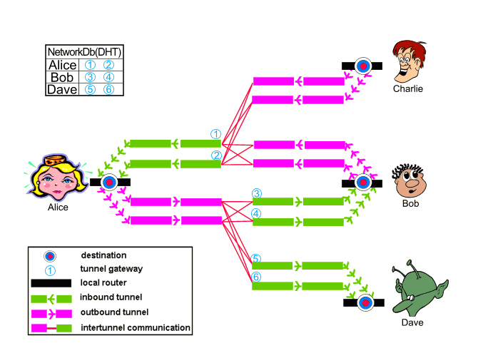

I2P is a scalable, self organizing, resilient message based anonymous network layer, upon which any number of different anonymity or security conscious applications can operate. Each of these applications may make their own anonymity, latency, and throughput tradeoffs without worrying about the proper implementation of a free route mixnet, allowing them to blend their activity with the larger anonymity set of users already running on top of I2P. Applications available already provide the full range of typical Internet activities - anonymous web browsing, anonymous web hosting, anonymous blogging (with Syndie), anonymous chat (via IRC or jabber), anonymous swarming file transfers (with i2p-bt and Azureus), anonymous file sharing (with I2Phex), anonymous email (with I2Pmail and susimail), anonymous newsgroups, as well as several other applications under development. Unlike web sites hosted within content distribution networks like Freenet or GNUnet, the services hosted on I2P are fully interactive - there are traditional web-style search engines, bulletin boards, blogs you can comment on, database driven sites, and bridges to query static systems like Freenet without needing to install it locally.
With all of these anonymity enabled applications, I2P takes on the role of the message oriented middleware - applications say that they want to send some data to a cryptographic identifier (a "destination") and I2P takes care of making sure it gets there securely and anonymously. I2P also bundles a simple streaming library to allow I2P's anonymous best-effort messages to transfer as reliable, in-order streams, transparently offering a TCP based congestion control algorithm tuned for the high bandwidth delay product of the network. While there have been several simple SOCKS proxies available to tie existing applications into the network, their value has been limited as nearly every application routinely exposes what in an anonymity context is sensitive information. The only safe way to go is to fully audit an application to ensure proper operation, and to assist in that we provide a series of APIs in various languages which can be used to make the most out of the network.
I2P is not a research project - academic, commercial, or governmental, but is instead an engineering effort aimed at doing whatever is necessary to provide a sufficient level of anonymity to those who need it. It has been in active development since early 2003 with one full time developer and a dedicated group of part time contributors from all over the world. All of the work done on I2P is open source and freely available on the website, with the majority of the code released outright into the public domain but making use of a few cryptographic routines under BSD-style licenses. The people working on I2P do not control what people release client applications under, and there are several GPL'ed applications available (I2PTunnel, susimail, Azureus, I2Phex). Funding for I2P comes entirely from donations, and does not receive any tax breaks in any jurisdiction, as many of the developers are themselves anonymous.
To understand I2P's operation, it is essential to understand a few key concepts. First, I2P makes a strict separation between the software participating in the network (a "router") and the anonymous endpoints ("destinations") associated with individual applications. The fact that someone is running I2P is not usually a secret. What is hidden is information on what the user is doing, if anything at all, as well as what router a particular destination is connected to. End users will typically have several local destinations on their router - for instance, one proxying in to irc servers, another supporting the user's anonymous webserver ("eepsite"), another for an I2Phex instance, another for torrents, etc.
Another critical concept to understand is the "tunnel" - a directed path through an explicitly selected set of routers, making use of layered encryption so that the messages sent in the tunnel's "gateway" appear entirely random at each hop along the path until it reaches the tunnel's "endpoint". These unidirectional tunnels can be seen as either "inbound" tunnels or "outbound" tunnels, referring to whether they are bringing messages to the tunnel's creator or away from them, respectively. The gateway of an inbound tunnel can receive messages from any peer and will forward them down through the tunnel until it reaches the (anonymous) endpoint (the creator). On the other hand, the gateway of an outbound tunnel is the tunnel's creator, and messages sent through that tunnel are encoded so that when they reach the outbound tunnel's endpoint, that router has the instructions necessary to forward the message on to the appropriate location.
A third critical concept to understand is I2P's "network database" (or "netDb") - a pair of algorithms used to share network metadata. The two types of metadata carried are "routerInfo" and "leaseSets" - the routerInfo gives routers the data necessary for contacting a particular router (their public keys, transport addresses, etc), while the leaseSet gives routers the information necessary for contacting a particular destination. Within each leaseSet, there are any number of "leases", each of which specifies the gateway for one of that destination's inbound tunnels as well as when that tunnel will expire. The leaseSet also contains a pair of public keys which can be used for layered garlic encryption.
I2P's operation can be understood by putting those three concepts together:

When Alice wants to send a message to Bob, she first does a lookup in the netDb to find Bob's leaseSet, giving her his current inbound tunnel gateways (3 and 4). She then picks one of her outbound tunnels and sends the message down it with instructions for the outbound tunnel's endpoint to forward the message on to one of Bob's inbound tunnel gateways. When the outbound tunnel endpoint receives those instructions, it forwards the message as requested, and when Bob's inbound tunnel gateway receives it, it is forwarded down the tunnel to Bob's router. If Alice wants Bob to be able to reply to the message, she needs to transmit her own destination explicitly as part of the message itself (taken care of transparently in the streaming library). Alice may also cut down on the response time by bundling her most recent leaseSet with the message so that Bob doesn't need to do a netDb lookup for it when he wants to reply, but this is optional.
While the tunnels themselves have layered encryption to prevent unauthorized disclosure to peers inside the network (as the transport layer itself does to prevent unauthorized disclosure to peers outside the network), it is necessary to add an additional end to end layer of encryption to hide the message from the outbound tunnel endpoint and the inbound tunnel gateway. This "garlic encryption" lets Alice's router wrap up multiple messages into a single "garlic message", encrypted to a particular public key so that intermediary peers cannot determine either how many messages are within the garlic, what those messages say, or where those individual cloves are destined. For typical end to end communication between Alice and Bob, the garlic will be encrypted to the public key published in Bob's leaseSet, allowing the message to be encrypted without giving out the public key to Bob's own router.
Another important fact to keep in mind is that I2P is entirely message based and that some messages may be lost along the way. Applications using I2P can use the message oriented interfaces and take care of their own congestion control and reliability needs, but most would be best served by reusing the provided streaming library to view I2P as a streams based network.
Both inbound and outbound tunnels work along similar principles - the tunnel gateway accumulates a number of tunnel messages, eventually preprocessing them into something for tunnel delivery. Next, the gateway encrypts that preprocessed data and forwards it to the first hop. That peer and subsequent tunnel participants add on a layer of encryption after verifying that it isn't a duplicate before forward it on to the next peer. Eventually, the message arrives at the endpoint where the messages are split out again and forwarded on as requested. The difference arises in what the tunnel's creator does - for inbound tunnels, the creator is the endpoint and they simply decrypt all of the layers added, while for outbound tunnels, the creator is the gateway and they pre-decrypt all of the layers so that after all of the layers of per-hop encryption are added, the message arrives in the clear at the tunnel endpoint.
The choice of specific peers to pass on messages as well as their particular ordering is important to understanding both I2P's anonymity and performance characteristics. While the network database (below) has its own criteria for picking what peers to query and store entries on, tunnels may use any peers in the network in any order (and even any number of times) in a single tunnel. If perfect latency and capacity data were globally known, selection and ordering would be driven by the particular needs of the client in tandem with their threat model. Unfortunately, latency and capacity data is not trivial to gather anonymously, and depending upon untrusted peers to provide this information has its own serious anonymity implications.
From an anonymity perspective, the simplest technique would be to pick peers randomly from the entire network, order them randomly, and use those peers in that order for all eternity. From a performance perspective, the simplest technique would be to pick the fastest peers with the necessary spare capacity, spreading the load across different peers to handle transparent failover, and to rebuild the tunnel whenever capacity information changes. While the former is both brittle and inefficient, the later requires inaccessible information and offers insufficient anonymity. I2P is instead working on offering a range of peer selection strategies, coupled with anonymity aware measurement code to organize the peers by their profiles.
As a base, I2P is constantly profiling the peers with which it interacts with by measuring their indirect behavior - for instance, when a peer responds to a netDb lookup in 1.3 seconds, that round trip latency is recorded in the profiles for all of the routers involved in the two tunnels (inbound and outbound) through which the request and response passed, as well as the queried peer's profile. Direction measurement, such as transport layer latency or congestion, is not used as part of the profile, as it can be manipulated and associated with the measuring router, exposing them to trivial attacks. While gathering these profiles, a series of calculations are run on each to summarize its performance - its latency, capacity to handle lots of activity, whether they are currently overloaded, and how well integrated into the network they seem to be. These calculations are then compared for active peers to organize the routers into four tiers - fast and high capacity, high capacity, not failing, and failing. The thresholds for those tiers are determined dynamically, and while they currently use fairly simple algorithms, alternatives exist.
Using this profile data, the simplest reasonable peer selection strategy is to pick peers randomly from the top tier (fast and high capacity), and this is currently deployed for client tunnels. Exploratory tunnels (used for netDb and tunnel management) pick peers randomly from the not failing tier (which includes routers in 'better' tiers as well), allowing the peer to sample routers more widely, in effect optimizing the peer selection through randomized hill climbing. These strategies alone do however leak information regarding the peers in the router's tip tier through predecessor and netDb harvesting attacks. In turn, several alternatives exist which, while not balancing the load as evenly, will address the attacks mounted by particular classes of adversaries.
By picking a random key and ordering the peers according to their XOR distance from it, the information leaked is reduced in predecessor and harvesting attacks according to the peers' failure rate and the tier's churn. Another simple strategy for dealing with netDb harvesting attacks is to simply fix the inbound tunnel gateway(s) yet randomize the peers further on in the tunnels. To deal with predecessor attacks for adversaries which the client contacts, the outbound tunnel endpoints would also remain fixed. The selection of which peer to fix on the most exposed point would of course need to have a limit to the duration, as all peers fail eventually, so it could either be reactively adjusted or proactively avoided to mimic a measured mean time between failures of other routers. These two strategies can in turn be combined, using a fixed exposed peer and an XOR based ordering within the tunnels themselves. A more rigid strategy would fix the exact peers and ordering of a potential tunnel, only using individual peers if all of them agree to participate in the same way each time. This varies from the XOR based ordering in that the predecessor and successor of each peer is always the same, while the XOR only makes sure their order doesn't change.
As mentioned before, I2P currently (release 0.6.1.1) includes the tiered random strategy above, but the others are planned for the 0.6.2 release. A more detailed discussion of the mechanics involved in tunnel operation, management, and peer selection can be found in the tunnel spec.
As mentioned earlier, I2P's netDb works to share the network's metadata. Two algorithms are used to accomplish this - primarily, a small set of routers are designated as "floodfill peers", while the rest of the routers participate in the Kademlia derived distributed hash table for redundancy. To integrate the two algorithms, each router always uses the Kademlia style store and fetch, but acts as if the floodfill peers are 'closest' to the key in question. Additionally, when a peer publishes a key into the netDb, after a brief delay they query another random floodfill peer, asking them for the key, and if that peer does not have it, they move on and republish the key again. Behind the scenes, when one of the floodfill peers receives a new valid key, they republish it to the other floodfill peers who then cache it locally.
Each piece of data in the netDb is self authenticating - signed by the appropriate party and verified by anyone who uses or stores it. In addition, the data has liveliness information within it, allowing irrelevant entries to be dropped, newer entries to replace older ones, and, for the paranoid, protection against certain classes of attack. This is also why I2P bundles the necessary code for maintaining the correct time, occasionally querying some SNTP servers (the pool.ntp.org round robin by default) and detecting skew between routers at the transport layer.
The routerInfo structure itself contains all of the information that one router needs to know to securely send messages to another router. This includes their identity (made up of a 2048bit ElGamal public key, a 1024bit DSA public key, and a certificate), the transport addresses which they can be reached on, such as an IP address and port, when the structure was published, and a set of arbitrary uninterpreted text options. In addition, there is a signature against all of that data as generated by the included DSA public key. The key for this routerInfo structure in the netDb is the SHA256 hash of the router's identity. The options published are often filled with information helpful in debugging I2P's operation, but when I2P reaches the 1.0 release, the options will be disabled and kept blank.
The leaseSet structure is similar, in that it includes the I2P destination (comprised of a 2048bit ElGamal public key, a 1024bit DSA public key, and a certificate), a list of "leases", and a pair of public keys for garlic encrypting messages to the destination. Each of the leases specify one of the destination's inbound tunnel gateways by including the SHA256 of the gateway's identity, a 4 byte tunnel id on that gateway, and when that tunnel will expire. The key for the leaseSet in the netDb is the SHA256 of the destination itself.
As the router currently automatically bundles the leaseSet for the sender inside a garlic message to the recipient, the leaseSet for destinations which will not receive unsolicited messages do not need to be published in the netDb at all. If the destination itself is sensitive, the leaseSet could instead be transmitted through other means without ever going into the netDb.
Bootstrapping the netDb itself is simple - once a router has at least one routerInfo of a reachable peer, they query that router for references to other routers in the network with the Kademlia healing algorithm. Each routerInfo reference is stored in an individual file in the the router's netDb subdirectory, allowing people to easily share their references to bootstrap new users.
Unlike traditional DHTs, the very act of conducting a search distributes the data as well, since rather passing Kademlia's standard IP+port pairs, references are given to the routers that the peer should query next (namely, the SHA256 of those routers' identities). As such, iteratively searching for a particular destination's leaseSet or router's routerInfo will also provide you with the routerInfo of the peers along the way. In addition, due to the time sensitivity of the data published, the information doesn't often need to migrate between peers - since a tunnel is only valid for 10 minutes, the leaseSet can be dropped after that time has passed. To take into account Sybil attacks on the netDb, the Kademlia routing location used for any given key varies over time. For instance, rather than storing a routerInfo on the peers closest to SHA256(routerInfo.identity), they are stored on the peers closest to SHA256(routerInfo.identity + YYYYMMDD), requiring an adversary to remount the attack again daily so as to maintain their closeness to the current routing key. As the very fact that a router is making a lookup for a given key may expose sensitive data (and the fact that a router is publishing a given key even more so), all netDb messages are transmitted through the router's exploratory tunnels.
The netDb plays a very specific role in the I2P network, and the algorithms have been tuned towards our needs. This also means that it hasn't been tuned to address the needs we have yet to run into. As the network grows, the primary floodfill algorithm will need to be refined to exploit the capacity available, or perhaps replaced with another technique for securely distributing the network metadata.
Communication between routers needs to provide confidentiality and integrity against external adversaries while authenticating that the router contacted is the one who should receive a given message. The particulars of how routers communicate with other routers isn't critical - three separate protocols have been used at different points to provide those bare necessities. To accommodate the need for high degree communication (as a number of routers will end up speaking with many others), I2P is migrating from a TCP based transport to a UDP based one - "Secure Semireliable UDP", or "SSU". As described in the SSU spec:
The goal of this protocol is to provide secure, authenticated, semireliable, and unordered message delivery, exposing only a minimal amount of data easily discernible to third parties. It should support high degree communication as well as TCP-friendly congestion control, and may include PMTU detection. It should be capable of efficiently moving bulk data at rates sufficient for home users. In addition, it should support techniques for addressing network obstacles, like most NATs or firewalls.
A bare minimum set of cryptographic primitives are combined together to provide I2P's layered defenses against a variety of adversaries. At the lowest level, interrouter communication is protected by the transport layer security - SSU encrypts each packet with AES256/CBC with both an explicit IV and MAC (HMAC-SHA256-128) after agreeing upon an ephemeral session key through a 2048bit Diffie-Hellman exchange, station-to-station authentication with the other router's DSA key, plus each network message has their own SHA256 hash for local integrity checking. Tunnel messages passed over the transports have their own layered AES256/CBC encryption with an explicit IV and verified at the tunnel endpoint with an additional SHA256 hash. Various other messages are passed along inside "garlic messages", which are encrypted with ElGamal/AES+SessionTags (explained below).
Garlic messages are an extension of "onion" layered encryption, allowing the contents of a single message to contain multiple "cloves" - fully formed messages along side their own instructions for delivery. Messages are wrapped into a garlic message whenever the message would otherwise be passing in cleartext through a peer who should not have access to the information - for instance, when a router wants to ask another router to participate in a tunnel, they wrap the request inside a garlic, encrypt that garlic to the receiving router's 2048bit ElGamal public key, and forward it through a tunnel. Another example is when a client wants to send a message to a destination - the sender's router will wrap up that data message (along side some other messages) into a garlic, encrypt that garlic to the 2048bit ElGamal public key published in the recipient's leaseSet, and forward it through the appropriate tunnels.
The "instructions" attached to each clove inside the encryption layer includes the ability to request that the clove be forwarded locally, to a remote router, or to a remote tunnel on a remote router. There are fields in those instructions allowing a peer to request that the delivery be delayed until a certain time or condition has been met, though they won't be honored until the nontrivial delays are deployed. It is possible to explicitly route garlic messages any number of hops without building tunnels, or even to reroute tunnel messages by wrapping them in garlic messages and forwarding them a number of hops prior to delivering them to the next hop in the tunnel, but those techniques are not currently used in the existing implementation.
As an unreliable, unordered, message based system, I2P uses a simple combination of asymmetric and symmetric encryption algorithms to provide data confidentiality and integrity to garlic messages. As a whole, the combination is referred to as ElGamal/AES+SessionTags, but that is an excessively verbose way to describe the simple use of 2048bit ElGamal, AES256, SHA256, and 32 byte nonces.
The first time a router wants to encrypt a garlic message to another router, they encrypt the keying material for an AES256 session key with ElGamal and append the AES256/CBC encrypted payload after that encrypted ElGamal block. In addition to the encrypted payload, the AES encrypted section contains the payload length, the SHA256 hash of the unencrypted payload, as well as a number of "session tags" - random 32 byte nonces. The next time the sender wants to encrypt a garlic message to another router, rather than ElGamal encrypt a new session key they simply pick one of the previously delivered session tags and AES encrypt the payload like before, using the session key used with that session tag, prepended with the session tag itself. When a router receives a garlic encrypted message, they check the first 32 bytes to see if it matches an available session tag - if it does, they simply AES decrypt the message, but if it does not, they ElGamal decrypt the first block.
Each session tag can be used only once so as to prevent internal adversaries from unnecessarily correlating different messages as being between the same routers. The sender of an ElGamal/AES+SessionTag encrypted message chooses when and how many tags to deliver, prestocking the recipient with enough tags to cover a volley of messages. Garlic messages may detect the successful tag delivery by bundling a small additional message as a clove (a "delivery status message") - when the garlic message arrives at the intended recipient and is decrypted successfully, this small delivery status message is one of the cloves exposed and has instructions for the recipient to send the clove back to the original sender (through an inbound tunnel, of course). When the original sender receives this delivery status message, they know that the session tags bundled in the garlic message were successfully delivered.
Session tags themselves have a very short lifetime, after which they are discarded if not used. In addition, the quantity stored for each key is limited, as are the number of keys themselves - if too many arrive, either new or old messages may be dropped. The sender keeps track whether messages using session tags are getting through, and if there isn't sufficient communication it may drop the ones previously assumed to be properly delivered, reverting back to the full expensive ElGamal encryption.
One alternative is to transmit only a single session tag, and from that, seed a deterministic PRNG for determining what tags to use or expect. By keeping this PRNG roughly synchronized between the sender and recipient (the recipient precomputes a window of the next e.g. 50 tags), the overhead of periodically bundling a large number of tags is removed, allowing more options in the space/time tradeoff, and perhaps reducing the number of ElGamal encryptions necessary. However, it would depend upon the strength of the PRNG to provide the necessary cover against internal adversaries, though perhaps by limiting the amount of times each PRNG is used, any weaknesses can be minimized. At the moment, there are no immediate plans to move towards these synchronized PRNGs.
While I2P is currently functional and sufficient for many scenarios, there are several areas which require further improvement to meet the needs of those facing more powerful adversaries as well as substantial user experience optimization.
I2P is an overlay network designed to be run on top of a functional packet switched network, exploiting the end to end principle to offer anonymity and security. While the Internet no longer fully embraces the end to end principle, I2P does require a substantial portion of the network to be reachable - there may be a number of peers along the edges running using restricted routes, but I2P does not include an appropriate routing algorithm for the degenerate case where most peers are unreachable. It would, however work on top of a network employing such an algorithm.
Restricted route operation, where there are limits to what peers are reachable directly, has several different functional and anonymity implications, dependent upon how the restricted routes are handled. At the most basic level, restricted routes exist when a peer is behind a NAT or firewall which does not allow inbound connections. This was largely addressed in I2P 0.6.0.6 by integrating distributed hole punching into the transport layer, allowing people behind most NATs and firewalls to receive unsolicited connections without any configuration. However, this does not limit the exposure of the peer's IP address to routers inside the network, as they can simply get introduced to the peer through the published introducer.
Beyond the functional handling of restricted routes, there are two levels of restricted operation that can be used to limit the exposure of one's IP address - using router-specific tunnels for communication, and offering 'client routers'. For the former, routers can either build a new pool of tunnels or reuse their exploratory pool, publishing the inbound gateways to some of them as part of their routerInfo in place of their transport addresses. When a peer wants to get in touch with them, they see those tunnel gateways in the netDb and simply send the relevant message to them through one of the published tunnels. If the peer behind the restricted route wants to reply, it may do so either directly (if they are willing to expose their IP to the peer) or indirectly through their outbound tunnels. When the routers that the peer has directly connections to want to reach it (to forward tunnel messages, for instance), they simply prioritize their direct connection over the published tunnel gateway. The concept of 'client routers' simply extends the restricted route by not publishing any router addresses. Such a router would not even need to publish their routerInfo in the netDb, merely providing their self signed routerInfo to the peers that it contacts (necessary to pass the router's public keys). Both levels of restricted route operation are planned for I2P 2.0.
There are tradeoffs for those behind restricted routes, as they would likely participate in other people's tunnels less frequently, and the routers which they are connected to would be able to infer traffic patterns that would not otherwise be exposed. On the other hand, if the cost of that exposure is less than the cost of an IP being made available, it may be worthwhile. This, of course, assumes that the peers that the router behind a restricted route contacts are not hostile - either the network is large enough that the probability of using a hostile peer to get connected is small enough, or trusted (and perhaps temporary) peers are used instead.
Even though the bulk of I2P's initial efforts have been on low latency communication, it was designed with variable latency services in mind from the beginning. At the most basic level, applications running on top of I2P can offer the anonymity of medium and high latency communication while still blending their traffic patterns in with low latency traffic. Internally though, I2P can offer its own medium and high latency communication through the garlic encryption - specifying that the message should be sent after a certain delay, at a certain time, after a certain number of messages have passed, or another mix strategy. With the layered encryption, only the router that the clove exposed the delay request would know that the message requires high latency, allowing the traffic to blend in further with the low latency traffic. Once the transmission precondition is met, the router holding on to the clove (which itself would likely be a garlic message) simply forwards it as requested - to a router, to a tunnel, or, most likely, to a remote client destination.
There are a substantial number of ways to exploit this capacity for high latency comm in I2P, but for the moment, doing so has been scheduled for the I2P 3.0 release. In the meantime, those requiring the anonymity that high latency comm can offer should look towards the application layer to provide it.
How to get rid of the timing constraint? Can we deal with the sessionTags more efficiently? What, if any, batching/mixing strategies should be made available on the tunnels? What other tunnel peer selection and ordering strategies should be available?
I2P's architecture builds on the concepts of message oriented middleware, the topology of DHTs, the anonymity and cryptography of free route mixnets, and the adaptability of packet switched networking. The value comes not from novel concepts of algorithms though, but from careful engineering combining the research results of existing systems and papers. While there are a few similar efforts worth reviewing, both for technical and functional comparisons, two in particular are pulled out here - Tor and Freenet.
At first glance, Tor and I2P have many functional and anonymity related similarities. While I2P's development began before we were aware of the early stage efforts on Tor, many of the lessons of the original onion routing and ZKS efforts were integrated into I2P's design. Rather than building an essentially trusted, centralized system with directory servers, I2P has a self organizing network database with each peer taking on the responsibility of profiling other routers to determine how best to exploit available resources. Another key difference is that while both I2P and Tor use layered and ordered paths (tunnels and circuits/streams), I2P is fundamentally a packet switched network, while Tor is fundamentally a circuit switched one, allowing I2P to transparently route around congestion or other network failures, operate redundant pathways, and load balance the data across available resources. While Tor offers the useful outproxy functionality by offering integrated outproxy discovery and selection, I2P leaves such application layer decisions up to applications running on top of I2P - in fact, I2P has even externalized the TCP-like streaming library itself to the application layer, allowing developers to experiment with different strategies, exploiting their domain specific knowledge to offer better performance.
From an anonymity perspective, there is much similarity when the core networks are compared. However, there are a few key differences. When dealing with an internal adversary or most external adversaries, I2P's simplex tunnels expose half as much traffic data than would be exposed with Tor's duplex circuits by simply looking at the flows themselves - an HTTP request and response would follow the same path in Tor, while in I2P the packets making up the request would go out through one or more outbound tunnels and the packets making up the response would come back through one or more different inbound tunnels. While I2P's peer selection and ordering strategies should sufficiently address predecessor attacks, I2P can trivially mimic Tor's non-redundant duplex tunnels by simply building an inbound and outbound tunnel along the same routers.
Another anonymity issue comes up in Tor's use of telescopic tunnel creation, as simple packet counting and timing measurements as the cells in a circuit pass through an adversary's node exposes statistical information regarding where the adversary is within the circuit. I2P's use of exploratory tunnels for delivering and receiving the tunnel creation requests and responses effectively spreads the messages randomly across the network, so that each of the peers who forwards the individual tunnel creation messages only see the peer they transmit to or receive from, and thanks to the garlic encryption, they are not aware of whether the message is part of a tunnel creation process or not. The participant positional information is useful to an adversary for mounting predecessor, intersection, and traffic confirmation attacks.
Tor's support for a second tier of "onion proxies" does offer a nontrivial degree of anonymity while requiring a low cost of entry, while I2P will not offer this topology until 2.0.
On the whole, Tor and I2P complement each other in their focus - Tor works towards offering high speed anonymous Internet outproxying, while I2P works towards offering a decentralized resilient network in itself. In theory, both can be used to achieve both purposes, but given limited development resources, they both have their strengths and weaknesses. The I2P developers have considered the steps necessary to modify Tor to take advantage of I2P's design, but concerns of Tor's viability under resource scarcity suggest that I2P's packet switching architecture will be able to exploit scarce resources more effectively.
Freenet played a large part in the initial stages of I2P's design - giving proof to the viability of a vibrant pseudonymous community completely contained within the network, demonstrating that the dangers inherent in outproxies could be avoided. The first seed of I2P began as a replacement communication layer for Freenet, attempting to factor out the complexities of a scalable, anonymous and secure point to point communication from the complexities of a censorship resistant distributed data store. Over time however, some of the anonymity and scalability issues inherent in Freenet's algorithms made it clear that I2P's focus should stay strictly on providing a generic anonymous communication layer, rather than as a component of Freenet. Over the years, the Freenet developers have come to see the weaknesses in the older design, prompting them to suggest that they will require a "premix" layer to offer substantial anonymity. In other words, Freenet needs to run on top of a mixnet such as I2P or Tor, with "client nodes" requesting and publishing data through the mixnet to the "server nodes" which then fetch and store the data according to Freenet's heuristic distributed data storage algorithms.
Freenet's functionality is very complementary to I2P's, as Freenet natively provides many of the tools for operating medium and high latency systems, while I2P natively provides the low latency mix network suitable for offering adequate anonymity. The logic of separating the mixnet from the censorship resistant distributed data store still seems self evident from an engineering, anonymity, security, and resource allocation perspective, so hopefully the Freenet team will pursue efforts in that direction, if not simply reusing (or helping to improve, as necessary) existing mixnets like I2P or Tor.
It is worth mentioning that there has recently been discussion and work by the Freenet developers on a "globally scalable darknet" using restricted routes between peers of various trust. While insufficient information has been made publicly available regarding how such a system would operate for a full review, from what has been said the anonymity and scalability claims seem highly dubious. In particular, the appropriateness for use in hostile regimes against state level adversaries has been tremendously overstated, and any analysis on the implications of resource scarcity upon the scalability of the network has seemingly been avoided. Specifically, while publishing the "anonymous" topology in the darknet does not necessarily immediately expose all identities, it is equivalent to publishing an organizational chart for a covert group, which can in turn be used by an adversary along side existing knowledge of their target to narrow down or identify different participants. In addition, by using only peers that are locally connected, the network's mixnet layer is vulnerable to a class of local view attacks. Further questions regarding susceptibility to traffic analysis, trust, and other topics do exist, but a more in depth review of this "globally scalable darknet" will have to wait until the Freenet team makes more information available.
I2P itself doesn't really do much - it simply sends messages to remote destinations and receives messages targeting local destinations - most of the interesting work goes on at the layers above it. By itself, I2P could be seen as an anonymous and secure IP layer, and the bundled streaming library as an implementation of an anonymous and secure TCP layer on top of it. Beyond that, I2PTunnel exposes a generic TCP proxying system for either getting into or out of the I2P network, plus a variety of network applications provide further functionality for end users.
The streaming library has grown organically for I2P - first mihi implemented the "mini streaming library" as part of I2PTunnel, which was limited to a window size of 1 message (requiring an ACK before sending the next one), and then it was refactored out into a generic streaming interface (mirroring TCP sockets) and the full streaming implementation was deployed with a sliding window protocol and optimizations to take into account the high bandwidth x delay product. Individual streams may adjust the maximum packet size and other options, though the default of 4KB compressed seems a reasonable tradeoff between the bandwidth costs of retransmitting lost messages and the latency of multiple messages.
In addition, in consideration of the relatively high cost of subsequent messages, the streaming library's protocol for scheduling and delivering messages has been optimized to allow individual messages passed to contain as much information as is available. For instance, a small HTTP transaction proxied through the streaming library can be completed in a single round trip - the first message bundles a SYN, FIN, and the small payload (an HTTP request typically fits) and the reply bundles the SYN, FIN, ACK, and the small payload (many HTTP responses fit). While an additional ACK must be transmitted to tell the HTTP server that the SYN/FIN/ACK has been received, the local HTTP proxy can deliver the full response to the browser immediately.
On the whole, however, the streaming library bears much resemblance to an abstraction of TCP, with its sliding windows, congestion control algorithms (both slow start and congestion avoidance), and general packet behavior (ACK, SYN, FIN, RST, rto calculation, etc).
Developed by: mihi, Ragnarok
Naming within I2P has been an oft-debated topic since the very beginning with advocates across the spectrum of possibilities. However, given I2P's inherent demand for secure communication and decentralized operation, the traditional DNS-style naming system is clearly out, as are "majority rules" voting systems. Instead, I2P ships with a generic naming library and a base implementation designed to work off a local name to destination mapping, as well as an optional add-on application called the "addressbook". The addressbook is a web-of-trust driven secure, distributed, and human readable naming system, sacrificing only the call for all human readable names to be globally unique by mandating only local uniqueness. While all messages in I2P are cryptographically addressed by their destination, different people can have local addressbook entries for "Alice" which refer to different destinations. People can still discover new names by importing published addressbooks of peers specified in their web of trust, by adding in the entries provided through a third party, or (if some people organize a series of published addressbooks using a first come first serve registration system) people can choose to treat these addressbooks as name servers, emulating traditional DNS.
I2P does not promote the use of DNS-like services though, as the damage done by hijacking a site can be tremendous - and insecure destinations have no value. DNSsec itself still falls back on registrars and certificate authorities, while with I2P, requests sent to a destination cannot be intercepted or the reply spoofed, as they are encrypted to the destination's public keys, and a destination itself is just a pair of public keys and a certificate. DNS-style systems on the other hand allow any of the name servers on the lookup path to mount simple denial of service and spoofing attacks. Adding on a certificate authenticating the responses as signed by some centralized certificate authority would address many of the hostile nameserver issues but would leave open replay attacks as well as hostile certificate authority attacks.
Voting style naming is dangerous as well, especially given the effectiveness of Sybil attacks in anonymous systems - the attacker can simply create an arbitrarily high number of peers and "vote" with each to take over a given name. Proof-of-work methods can be used to make identity non-free, but as the network grows the load required to contact everyone to conduct online voting is implausible, or if the full network is not queried, different sets of answers may be reachable.
As with the Internet however, I2P is keeping the design and operation of a naming system out of the (IP-like) communication layer. The bundled naming library includes a simple service provider interface which alternate naming systems can plug into, allowing end users to drive what sort of naming tradeoffs they prefer.
Syndie is a safe, anonymous blogging / content publication / content aggregation system. It lets you create information, share it with others, and read posts from those you're interested in, all while taking into consideration your needs for security and anonymity. Rather than building its own content distribution network, Syndie is designed to run on top of existing networks, syndicating content through eepsites, Tor hidden services, Freenet freesites, normal websites, usenet newgroups, email lists, RSS feeds, etc. Data published with Syndie is done so as to offer pseudonymous authentication to anyone reading or archiving it.
Developed by: mihi
I2PTunnel is probably I2P's most popular and versatile client application, allowing generic proxying both into and out of the I2P network. I2PTunnel can be viewed as four separate proxying applications - a "client" which receives inbound TCP connections and forwards them to a given I2P destination, an "httpclient" (aka "eepproxy") which acts like an HTTP proxy and forwards the requests to the appropriate I2P destination (after querying the naming service if necessary), a "server" which receives inbound I2P streaming connections on a destination and forwards them to a given TCP host+port, and an "httpserver" which extends the "server" by parsing the HTTP request and responses to allow safer operation. There is an additional "socksclient" application, but its use is not encouraged for reasons previously mentioned.
I2P itself is not an outproxy network - the anonymity and security concerns inherent in a mix net which forwards data into and out of the mix have kept I2P's design focused on providing an anonymous network which capable of meeting the user's needs without requiring external resources. However, the I2PTunnel "httpclient" application offers a hook for outproxying - if the hostname requested doesn't end in ".i2p", it picks a random destination from a user-provided set of outproxies and forwards the request to them. These destinations are simply I2PTunnel "server" instances run by volunteers who have explicitly chosen to run outproxies - no one is an outproxy by default, and running an outproxy doesn't automatically tell other people to proxy through you. While outproxies do have inherent weaknesses, they offer a simple proof of concept for using I2P and provide some functionality under a threat model which may be sufficient for some users.
I2PTunnel enables most of the applications in use. An "httpserver" pointing at a webserver lets anyone run their own anonymous website (or "eepsite") - a webserver is bundled with I2P for this purpose, but any webserver can be used. Anyone may run a "client" pointing at one of the anonymously hosted IRC servers, each of which are running a "server" pointing at their local IRCd and communicating between IRCds over their own "client" tunnels. End users also have "client" tunnels pointing at I2Pmail's POP3 and SMTP destinations (which in turn are simply "server" instances pointing at POP3 and SMTP servers), as well as "client" tunnels pointing at I2P's CVS server, allowing anonymous development. At times people have even run "client" proxies to access the "server" instances pointing at an NNTP server.
Developed by: duck, et al
i2p-bt is a port of the mainline python BitTorrent client to run both the tracker and peer communication over I2P. Tracker requests are forwarded through the eepproxy to eepsites specified in the torrent file while tracker responses refer to peers by their destination explicitly, allowing i2p-bt to open up a streaming lib connection to query them for blocks.
In addition to i2p-bt, a port of bytemonsoon has been made to I2P, making a few modifications as necessary to strip any anonymity-compromising information from the application and to take into consideration the fact that IPs cannot be used for identifying peers.
Developed by: parg, et al
The developers of the Azureus BitTorrent client have created an "azneti2p" plugin, allowing Azureus users to participate in anonymous swarms over I2P, or simply to access anonymously hosted trackers while contacting each peer directly. In addition, Azureus' built in tracker lets people run their own anonymous trackers without running bytemonsoon (which has substantial prerequisites) or i2p-bt's tracker. The plugin is currently (July 2005) fully functional, but is in early beta and has a fairly complicated configuration process, though it is hopefully going to be streamlined further.
Developed by: sirup
I2Phex is a fairly direct port of the Phex gnutella filesharing client to run entirely on top of I2P. While it has disabled some of Phex's functionality, such as integration with gnutella webcaches, the basic file sharing and chatting system is fully functional.
Developed by: postman, susi23, mastiejaner
I2Pmail is more a service than an application - postman offers both internal and external email with POP3 and SMTP service through I2PTunnel instances accessing a series of components developed with mastiejaner, allowing people to use their preferred mail clients to send and receive mail pseudonymously. However, as most mail clients expose substantial identifying information, I2P bundles susi23's web based susimail client which has been built specifically with I2P's anonymity needs in mind. The I2Pmail/mail.i2p service offers transparent virus filtering as well as denial of service prevention with hashcash augmented quotas. In addition, each user has control of their batching strategy prior to delivery through the mail.i2p outproxies, which are separate from the mail.i2p SMTP and POP3 servers - both the outproxies and inproxies communicate with the mail.i2p SMTP and POP3 servers through I2P itself, so compromising those non-anonymous locations does not give access to the mail accounts or activity patterns of the user. At the moment the developers work on a decentralized mailsystem, called "v2mail". More information can be found on the eepsite hq.postman.i2p.